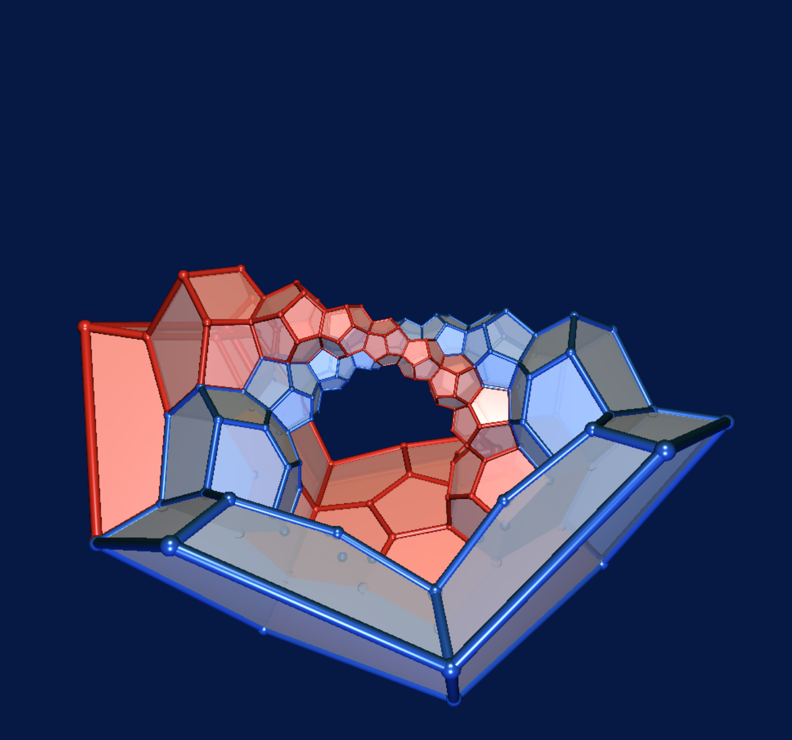

HEGL Community Seminar
Speaker: Jürgen Richter-Gebert (TU München)
Date: 22.11.2021 14:15
Title: Regular 4-polytopes, quaternions, and Hopf fibrations
Abstract: Platonic solids are very special objects that exhibit an extremely high degree of symmetry. Regular polytopes are their generalization to higher dimensions and admit (no surprise) even higher degrees of symmetry. Among all dimensions dimension 2 and dimension 4 play a very special role since they carry algebraic structures that allow to express geometric rotations as multiplications with 'numbers'. For dimension 2 these are the complex numbers – in dimension 4 these are the quaternions. Bringing together regular 4-dimensional polytopes with quaternions opens a mathematical playground full of unexpected twists (literally) and surprises. Using interactive visualizations this talk aims to build up an intuition for this interplay. It will be shown how the elements of the rotation group of a dodecahedron translates into the faces of a 120-cell (the 4-dimensional analogue of the dodecahedron), and how subgroups and their cosets turn into systems of nested rings in 4D – a discrete version of the Hopf fibration.
Back to seminar page